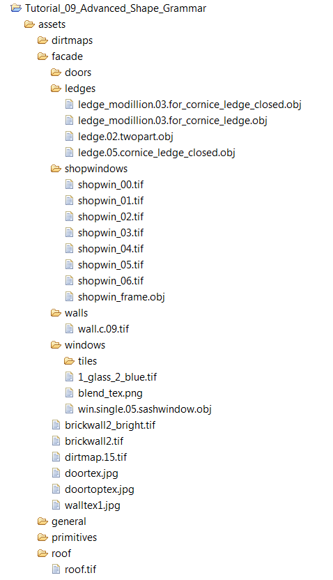

Asset and Texture Search
The search for an inserted asset or texture is always relative to the rule file in which the concerning operation is invoked. This is also the case for imported rule files.
The search order is as follows:
- If filePath is an absolute workspace path, that is, starts with "/", then no searching is done and filePath must match a file.
- Try to resolve relative to assets in the project where the rule file resides.
- Try to resolve relative to the root of the project where the rule file resides.
Examples
The standard use case is the one where geometry assets and image files are stored in the project's asset folder. The example below shows an expanded folder structure.

Below are excerpts from the corresponding rule file. First, some file paths are set up in the attr section; these attributes are then used in the rules to insert the obj and tif files. Note that the whole path relative to the project's assets folder has to be passed.
...
// models
attr windowAsset = "facade/windows/win.single.05.sashwindow.obj"
attr ledgeAsset = "facade/ledges/ledge.02.twopart.obj"
attr corniceAsset = "facade/ledges/ledge.05.cornice_ledge_closed.obj"
attr modillionAsset = "facade/ledges/ledge_modillion.03.for_cornice_ledge.obj"
attr windowOpeningAsset = "general/primitives/cube.nofrontnoback.notex.obj"
attr doorOpeningAsset = "general/primitives/cube.leftrighttop.inw.obj"
// textures
attr roofTexture = "roof/roof.tif"
attr wallTexture = "facade/walls/wall.c.09.tif"
attr dirtmap = "dirtmaps/dirtmap.16.tif"
attr doorTexture = "facade/doors/tiles/1_shop_glass_grey.tif"
attr shopFrameAsset = "facade/shopwindows/shopwin_frame.obj"
shopTexture(nr) = "facade/shopwindows/shopwin_0" + nr + ".tif"
windowTexture(nr) = "facade/windows/tiles/1_rollo_" + nr + "_brown.tif"
...
WindowAsset -->
set(material.colormap, windowTexture(ceil(rand(7))))
i(windowAsset)
set(material.specular.r, 0.5)
set(material.specular.g, 0.5)
set(material.specular.b, 0.5)
set(material.shininess, 4)
...